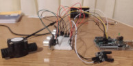
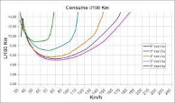

Nuestra empresa presta servicios de recepcion almacenamiento y prestacion de datos sobre los parametros que mas te importan de tu coche,
como por ejemplo: el nivel de gasolina, el consumo en tiempo real y media, temperatura de liquidos, velocidad ...
Estos servicios estan principalmente enfocados en vehiculos antiguos que, o bien le fallan los sensores que tienen actualmente o bien no los tienen,
Pero tambien podemos ofrecer servicios para coches de competicion, motos o incluso vehiculos industriales.
Utilizamos una placa de arduino, varios sensores, una raspberry y mucha programacion web para poder obtener estos datos enviarlos a un servidor, tratarlos y alamacenarlos.
Gracias a esto podemos obtener medias, graficas de consumo y otros valores muy utiles para tu vehiculo.
Tambien ofrecemos servicios de instalacion y mantenimiento lo cual facilita a nuestros clientes que no no se quieren manchar las manos o que no
se atreven a meter mano a su vehiculo a disfrutar de las ventajas de nuestros servicios.
Nuestros expertos son los mejores cualificados y estan especializados en estos sistemas asique no hay que tener miedo de dejar tu vehiculo con ellos :)

Utilizamos sensores como: Sensores ultrasonicos, sensores de temperatura caudalimetros, sensores de efecto hall.
Esto nos posibilita obtener datos como: El nivel de gasolina, el consumo, las revoluciones del motor, la velocidad ...
Todo estos componentes han sido testeados y utilizados a diario para comprobar su fiabilidad, su seguridad y que son los mejores componentes que
podemos obtener y al mejor precio.

Con los datos que recopilamos de tu vehiculo te podemos ofrecer estadisticas del funcionamiento de tu coche, sirviendo datos como:
El consumo de gasolina respecto a la velocidad del vehiculo, cuanto tiepo tarda en llegar a la temperatura de trabajo el motor o como afecta
la velocidad respecto al consumo
Estos no son datos de consula dentro del vehiculo, por lo tanto no los mostramos en la pantalla principal del sistema, pero lo podremos consultar
desde cualquier dispositivo, pero siempre que nuestro vehiculo este parado, para no distraerte de lo mas importante.